个人简历
求职意向：Web前端
| 姓名李志想 | 性别男 |
| 年龄24岁 | 学历本科 |
| 手机18518545192 | 邮箱lzx981128@163.com |
| 博客https://www.lzx981128.top/ |
G
i
t
h
u
b
https://github.com/lzx1128/
|
教育经历
| 本科 | 郑州工业应用技术学院 | 计算机科学与技术 | 2015.9 - 2019.7 |
工作经历
| 2021年9月- 至今 | 北京灵医灵科技有限公司 | web前端开发工程师 |
| 2019年9月-2021年9 月 | 北京网邻通信息技术有限公司 | web前端开发工程师 |
 专业技能
专业技能
- 1.熟练掌握JavaScript、CSS、HTML等前端相关技术,熟悉W3C标准与ES规范.
- 熟练掌握flex、双飞翼布局、圣杯布局、伪等高布局等布局方案.
- 掌握ES6等新语法及特性,如装饰器、箭头函数等.
- 掌握JSONP、CORS、配置代理解决跨域问题.
- 掌握Http、Https协议及网络通信原理.
- 有良好的工作及编码习惯,熟练使用git、svn工具.
- 掌握基于Node使用express、Koa搭建出服务器.
- 熟练掌握Vue全家桶（Vue核心技术、Vue-router、Vuex）,并熟悉Vue技术栈相关性能优化
- 熟练使用 Element 、Ant design， Vant 等常用 UI 组件库;熟练使用 Echarts 绘制图表
- 了解 Ts 语法和 SQL语句和 Webpack 打包工具.
 项目经验
项目经验
潍坊影像云平台 (PC端)
项目描述:该项目主要面向医生和公司商务使用，实现区域内多级医院之间的医疗影像信息共享
个人职责:负责PC端开发,基础管理模块、登陆模块、各类图表、及后期项目迭代,更新,维护.
技术要点:
- 负责PC端开发,基础管理模块、登陆模块、各类图表、及后期项目迭代,更新,维护.
- 运用 Element UI 对网站页面进行搭建及功能实现.
- 对可视化组件进行抽离与封装,可按不同维度展示用户所需要的可视化功能.
- 实现按需加载组件优化渲染效率,极大的提升性能,提高用户使用体验.
- 使用Echarts 对各个数据图表进行可视化展示.
组件库产品
项目描述:一套公司级别前端通用组件库，方便公司各业务线快速进行二开并且保证基础ui 风格统一.
个人职责:调研公司主要项目,确定需要开发那些前端组件,与UI保持持续沟通.借鉴市面UI组件进行底层搭建，进行二次封装.
技术要点:
- 基于 Element, Echarts 的组件二次分装.
- 利用 Vue搭建底层,使用 css+h5完成页面布局.
- Webpack 个性化配置以及优化.
- 利用VuePress打造前端组件文档.
- 使用Echarts 对各个数据图表进行可视化展示.
医学影像云潍坊服务号 (移动端)
项目描述:为患者提供医学影像和报告查询，下载，分享服务.
个人职责:使用 vue 前端框架进行移动端开发,负责首页、注册、个人中心、就诊人管理、数字影像、支付模块.
技术要点:
- 使用 Vant 组件库，并实现按需引入依赖包.
- 使用postcss-px2rem库及meta标签,解决适配问题.
- 通过props及消息订阅与发布进行组件通信.
- 开通点金计划解决微信支付完成不能跳转指定数字影像页面.
- 运用egg.js框架快速搭建服务器,获取openID,实现微信授权.
登记叫号系统 (PC端)
项目描述:该项目是针对医院诊候诊区域所使用的智能化分诊和排队叫号管理系统.
个人职责:负责登陆权限、检查登记、叫号、区域医院， 科室、及项目后期迭代,维护.
技术要点:
- 高度还原UI设计稿，自定义封装日历、周历等组件.
- flex布局,运用scss构建页面.
- 使用Vue-router实现路由跳转,运用query、params等实现路由传参.
- 使用axios发送Ajax请求获取数据,同时使用拦截器对请求和响应进行拦截处理.
- 使用vuex管理数据,并运用sessionStorage解决刷新页面vuex数据丢失问题.
医学影像云潍坊服务号 (node.js)
项目描述:该项目是采用 Egg.js 框架为医学影像云提供 API 接口.
个人职责:负责登陆、注册、修改密码、就诊人管理、微信授权功能模块.
技术要点:
- 基于Eggjs框架 搭建脚手架
- Egg.js配置连接MySql数据库、操作数据库实现用户添加、修改、查询等功能.
- 运用egg.js框架快速搭建服务器,获取openID,实现微信授权.
- 使用VSCode插件REST Client 测试送请求及返回的参数.
药云仓(微信小程序)
项目描述:药云仓是医药产业软件系统助你开启智慧医药新时代.
个人职责:负责微信小程序开发, 商品，订单，支付，与售后流程模块.
技术要点:
- 使用uniApp框架完成功能点实现.
- 运用Koa快速搭建服务器,获取openID,存入Storage.
- 利用tabbar实现底部导航功能.
- 正则匹配 替换富文本编辑器的HTML 样式问题.
自我评价
- 喜欢上技术站（GitHub，CSDN等）和浏览他人博客及优秀作品来充实自己.
- 自学能力较强，目前掌握的技术栈基本全是自学所得.
- 喜欢换位思考，喜欢分享个人经验以及和他人交流经验.
- 抗压能力强，善于听取他人意见，善于总结经验、吸取教训.